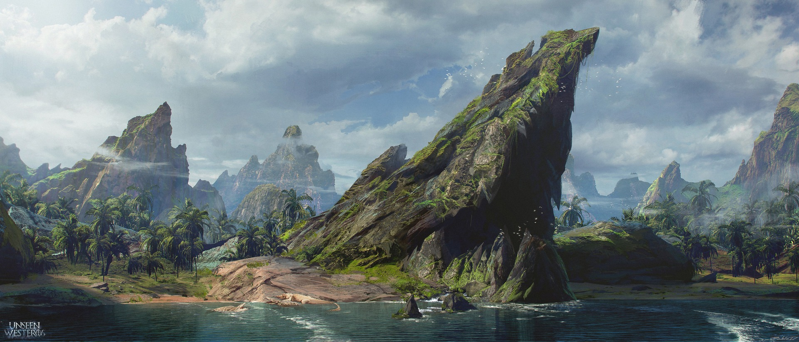

Соториос
Соториос — большой континент размером с Африку, лежащий к юго-востоку от Вестероса и к югу от Эссоса, по ту сторону Летнего Моря. О Соториосе известно довольно мало: он покрыт джунглями, в которых водятся мохнатые обезьяны, и болотами, в которых живут ящерицы. На карте Валирии в «Танце с драконами» показана часть побережья Соториоса, в том числе Мыс Василиска и огромная река Замойос, впадающая в Летнее Море. Острова Василиска, а также Остров Топора лежат у самого побережья Соториоса, Наат — западнее в Летнем Море.
